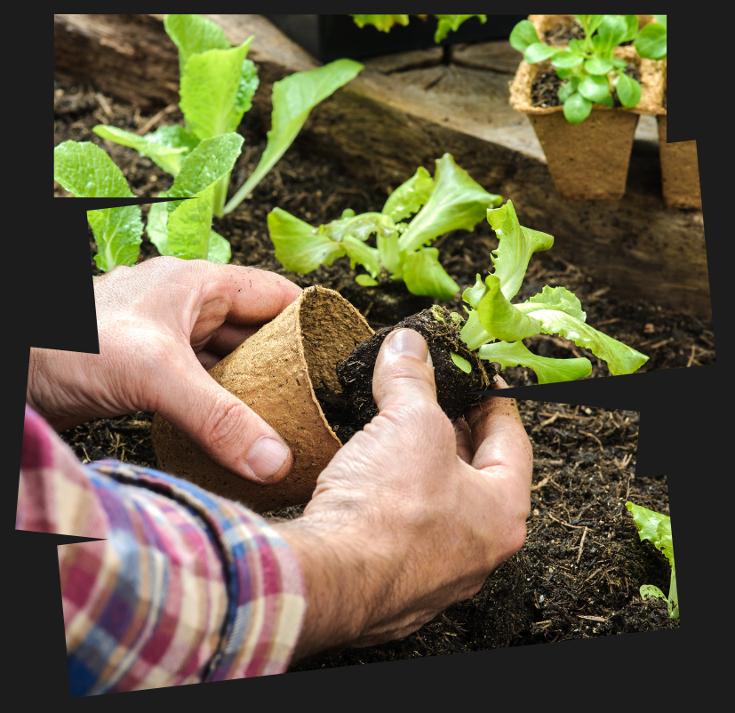

Transform Your Space into
An Oasis with
Lucky Shrub

About Us
Welcome to Lucky Shrub, where beauty and nature come together to transform your outdoor spaces. Started by a husband and wife team, Jason and Maria, Lucky Shrub has been providing garden design, maintenance, and landscaping services for over [insert number of years]. Our passion for plants and nature drives us to create stunning and sustainable outdoor spaces for our clients.
Jason, our garden architect, has 18 years of experience in creating unique garden designs. He leads our team of skilled landscapers to bring each design to life. Maria, our marketing manager, oversees the nursery and is dedicated to providing the best customer service experience.
At Lucky Shrub, we believe that everyone should have access to the benefits of a well-designed garden. Whether you're looking to create a small herb garden, a large backyard oasis, or anything in between, our team is here to help. Our goal is to make the process of transforming your outdoor space into a beautiful and functional oasis as simple and enjoyable as possible.
Visit our plant nursery to browse a variety of indoor and outdoor plants. Our knowledgeable staff is always available to help you find the perfect plants for your garden. We look forward to working with you and creating the garden of your dreams.